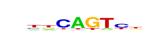

| p-value: | 1e-34 |
| log p-value: | -7.959e+01 |
| Information Content per bp: | 1.646 |
| Number of Target Sequences with motif | 313.0 |
| Percentage of Target Sequences with motif | 18.26% |
| Number of Background Sequences with motif | 4069.5 |
| Percentage of Background Sequences with motif | 8.73% |
| Average Position of motif in Targets | 54.5 +/- 19.5bp |
| Average Position of motif in Background | 50.1 +/- 34.0bp |
| Strand Bias (log2 ratio + to - strand density) | 1.1 |
| Multiplicity (# of sites on avg that occur together) | 1.07 |
| Motif File: | file (matrix) reverse opposite |
| Rank | Match Score | Redundant Motif | P-value | log P-value | % of Targets | % of Background | Motif file |
| 1 | 0.922 | 1e-29 | -67.717307 | 9.33% | 3.35% | motif file (matrix) | |
| 2 | 0.870 |  | 1e-23 | -55.133795 | 25.61% | 15.96% | motif file (matrix) |
| 3 | 0.758 | 1e-21 | -48.541355 | 22.52% | 13.95% | motif file (matrix) | |
| 4 | 0.748 | 1e-19 | -45.260492 | 3.09% | 0.63% | motif file (matrix) | |
| 5 | 0.751 | 1e-18 | -43.159349 | 0.70% | 0.01% | motif file (matrix) | |
| 6 | 0.792 | 1e-14 | -32.530873 | 17.44% | 11.16% | motif file (matrix) | |
| 7 | 0.711 | 1e-13 | -31.689466 | 0.41% | 0.00% | motif file (matrix) | |
| 8 | 0.647 | 1e-12 | -28.302394 | 14.29% | 8.98% | motif file (matrix) |